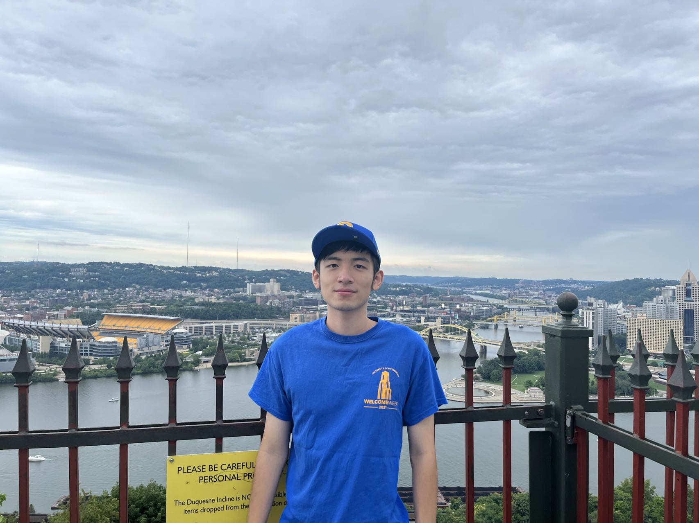

Zhuochun Li 「李卓淳」

Welcome!
I am a third-year PhD student at the University of Pittsburgh (UPitt), majoring in Information Science. I received my M.S. in Information Science from Pitt in 2022, and my B.S. in Computer Science in 2020. I am involved in the iRiS Lab at Pitt, mentored by Prof. Daqing He.
Research interests: My research interests include Natural Language Processing (NLP), Information Retrieval, and Machine Learning.
News: 🎇
-
August 2025 [Paper] Our paper “Think Globally, Group Locally: Evaluating LLMs Using Multi-Lingual Word Grouping Games.” is accepted to EMNLP 2025 Main Conference! 🎊
July 2025 [Internship] I’ll be joining Amazon as an Applied Scientist Intern for Fall 2025 in San Diego, CA.
May 2025 [Paper] My first-author paper "Learning from Committee: Reasoning Distillation from a Mixture of Teachers with Peer-Review" is accepted by ACL 2025!! Looking forward to presenting it at ACL 2025 on July 27–August 1st, 2025 | Vienna, Austria. I would love to connect with folks! Feel free to reach out if you're around. 🎉 🎉
April 2025 [Paper] Our paper "Reason-to-Rank: Distilling Direct and Comparative Reasoning from Large Language Models for Document Reranking" is accepted by SIGIR 2025! 🎊
March 2025 [Exam] I am happy to be informed that I passed my PhD Preliminary Exam. 🎓
Publications
-
Think Globally, Group Locally: Evaluating LLMs Using Multi-Lingual Word Grouping Games
César Guerra-Solano, Zhuochun Li, Xiang Lorraine Li
EMNLP 2025 Main Conference
Learning from Committee: Reasoning Distillation from a Mixture of Teachers with Peer-Review
Zhuochun Li, Yuelyu Ji, Rui Meng, Daqing He
ACL 2025 Findings
Reason-to-Rank: Distilling Direct and Comparative Reasoning from Large Language Models for Document Reranking
Yuelyu Ji, Zhuochun Li, Rui Meng, Daqing He
SIGIR 2025
Mitigating the Risk of Health Inequity Exacerbated by Large Language Models
Yuelyu Ji, Wenhe Ma, Sonish Sivarajkumar, Hang Zhang, Eugene Mathew Sadhu, Zhuochun Li, Xizhi Wu, Shyam Visweswaran, Yanshan Wang
arXiv preprint arXiv:2410.05180 (2024).
RAG-RLRC-LaySum at BioLaySumm: Integrating Retrieval-Augmented Generation and Readability Control for Layman Summarization of Biomedical Texts
Yuelyu Ji, Zhuochun Li, Rui Meng, Sonish Sivarajkumar, Yanshan Wang, Zeshui Yu, Hui Ji, Yushui Han, Hanyu Zeng, Daqing He
2024 Proceedings of the 23rd Workshop on Biomedical Natural Language Processing (BioNLP Workshop of ACL 2024)
Effects of Different Prompts on the Quality of GPT-4 Responses to Dementia Care Questions
Zhuochun Li, Bo Xie, Robin Hilsabeck, Alyssa Aguirre, Ning Zou, Zhimeng Luo, and Daqing He
2024 12th IEEE International Conference on Health Informatics (ICHI 2024)
SiaKey: A Method for Improving Few-shot Learning with Clinical Domain Information
Zhuochun Li, Khushboo Thaker, Daqing He
2023 IEEE-International Conference on Biomedical and Health Informatics(BHI 2023)
Towards Accurate and Clinically Meaningful Summarization of Electronic Health Record Notes: A Guided Approach
Zhimeng Luo, Yuelyu Ji, Abhibha Gupta, Zhuochun Li, Adam Frisch, Daqing He
2023 IEEE-International Conference on Biomedical and Health Informatics(BHI 2023)
Domestic Violence Crisis Recognition Method based on Bi-LSTM+Attention
Zhuochun Li, Zhixiao Wang, Wenyao Yan, Min Huang, Qinyuan Fan, Xin Wang
2022 IEEE 8th Annual International Conference on Network and Information Systems for Computers (ICNISC 2022)
Projects
-
[Mar 2024] PhD Preliminary Exam Project
Introduced a novel Fault-Aware DistIllation via Peer-Review (FAIR) approach that enables student LLM to better acquire reasoning skills from multiple teacher LLMs Chatgpt, Gemini, and Mistral. Helped student LM learn not only from the gold-standard rationale but also from feedback on their own mistakes via instruction tuning through a simulated peer-review process between teacher LLMs. Demonstrated the effectiveness of our method across comprehensive experiments on mathematical(GSM8K, SVAMP), commonsense(StrategyQA), and logical(LogiQA) reasoning tasks.
[Sep 2023] ADRD Project
Worked in iRiS Lab with Professor Bo Xie from The University of Texas at Austin, explored automatic text classification techniques based on LLM for dementia and Alzheimer's patients based on their online posts.
[Jan 2023] LITE and Chief Complaint Project
Cooperated with Adam Frisch from UPMC and applied BART model to summarize the Electronic Health Records(EHRs). This method could help doctors identify the chief complaint of patients and give them diagnosis. We tried to use summarization model to extract critical information from long text and innovative ways to eliminate the hallucinations.
[May 2022] Ovarian Cancer Forum
Utilized the Ovarian Cancer Forum to help cancer patients via NLP techniques, which was developed by iRiS Lab and the School of Nursing at Pitt. We aimed to identify patients' disease trajectories based on their descriptions. Studied few-shot learning methods in the applications of text classification and recommendation systems.
[Jan 2020] Domestic Violence Crisis Recognition Method based on Deep Learning
Collected online posts about domestic violence and built deep learning models to identify domestic violence crisis automatically. Constructed CNN, RNN, LSTM, Bi-LSTM+self-Attention neural network models to accomplish text categorization task, and Bi-LSTM+self-Attention model had the best performance, with accuracy rate of 90.22% and recall rate of 93.98%.
[Jul 2019] Intelligent Chatbot Design
Remote research projects mentored by Fan Zhang from MIT. Interpreted intentions from user stock queries and supported daily dialogue occasions by spaCy. Integrated the bot on Wechat and enabled users to acquire expected stock information fast: demo.
Industry Experience
-
[September 2025] Applied Scientist Intern, Amazon
Manager: Ed Vul.
[May 2025] Research Intern, Ping An Technology
Explored LLM Probing on reference-free evaluation tasks. Extracted Qwen3-1.7B internal layer representations for SocREval score on {question, answer} pairs. Built effective probing classifiers to filter data and improve SFT performance.
[May 2022] Machine Learning Engineer Intern, MEDA AI
Improved the text to speech(TTS) model based on Tactron and trained it to 10M steps on AWS server. Assisted constructed 3D character models and 40 facial attributes classification tasks on dataset CelebA. Relevant project was in the negotiation process for a potential purchase with Deloitte.
[May 2021] Software Engineering Intern, Pactera Technology
Design and development of Intelligent Customer Service System. Conducted surveys with over 100 customers, assisted designing database E-R model containing 34 tables. Contributed more than 20 web page interface implementation for different service requirements of clients. Developed online semantic analysis system using Baidu voice recognition API with 80% code coverage.
Others
-
I like working out and doing sports. I regularly go to gym every week, play soccer ball and basketball at weekends. And I am a trained ping-pong player. 🏓
Also, I play the drum or go out for a ride with my favorite Subaru WRX STI when feel stressed, which can make me feel relaxed! 😁
Updated on August 2025
Visitor count: